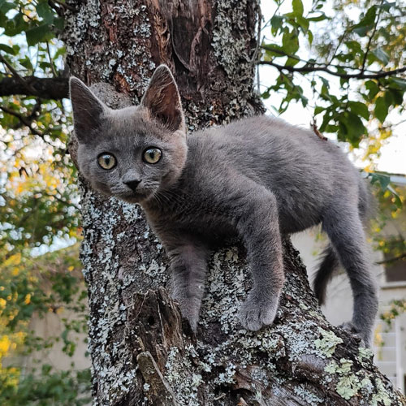

I'm Adopting A Cat
If you are adopting a cat from Break The Chains, many of the same rules apply, but here are a few rules to help your cat adapt to their new life.
- Six weeks should be allowed before letting a new cat outside - even if they are used to being an outside cat. This advice was given by a lady with over thirty cats and many years experience of rescuing them. Most live only inside.
- If you wish to keep your cat indoors permanently, consider having a 'catio' built where they can enjoy the fresh air. Have different levels where they can climb administration rest.
- An old wives tale which works, is to smear a little butter on their front paws when they arrive - they will wash it off and feel more relaxed.
- I personally don't agree with collars on cats. They can get snared in branches etc.
- Put a baby gate in place to separate your dogs from your cat until they are used to each other, it also provides a quick retreat safe place for the feline.
- Do not give them milk only water as milk isn't healthy for them.
- ALWAYS feed cats away from dogs and preferably on a higher surface.
- Consider installing a cat flap to make things easy for yourselves and the puss once the six week period is up. BTC can check in advance if a cat is used to being allowed outside or not. Please feel free to ask us about your chosen cat.
- Please refer to the section on 'microchips' which will also be relevant to your cat.
Remember, just like any new pet, cats can be 'upset' by the new environment they find themselves transported to. They may hide and will need time before they feel secure enough to let you pet them. Its a good idea to provide an enclosed area, like a box with a hole cut out or a ready made cat igloo. Boxes are much favoured by cats and if you turn a sturdy one upside down and cut out a 'hole' chances are the cat will retreat into it and feel safe. Cat trees are also great because felines feel at their safest if off ground level. They love a high vantage point. Unlike dogs, most cats are territorial focused, not people focused. There are always exceptions, but on the whole, a cat will try to get back to its territory not its owner - hence the six weeks guidance. Patience is very important with cats, they can be skitted easily and it's difficult to gain their trust if they get scared.
We encourage you to read through this app/pack as a lot of the information regarding water and food for example (have access to water at all times including through the night) is transitional to your new cat as well. Many cats like to graze throughout the day for instance.
Please have a litter and surgical spirit to hand - cats will automatically go to a litter and if there is an accident surgical spirit is key for cleaning up. You can use it on the litter tray too as your cats won’t smell it and will still use the tray post clean.
The gift of time is really all it takes to settle your new pet and have its trust. Let them come to you is key while they are in the transitional stage.